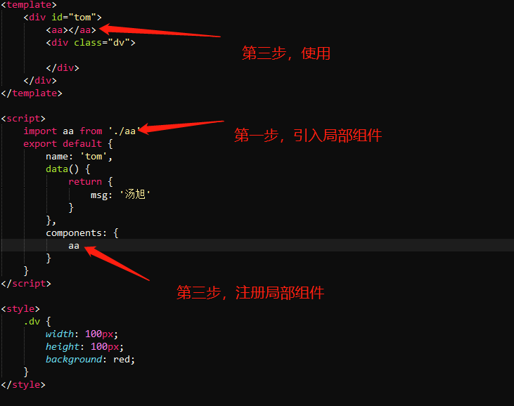

局部组件就是在别的组件中使用另一个组件，使用.vue组件文件的时候，使用局部组件步骤如下：

步骤说明：
在一个组件中组件中使用其他局部组件：
1、引入局部组件：
import 局部组件变量名称 from '组件路径'
2、注册局部组件：
在当前.vue文件的export default（如果是App.vue文件则就是new Vue({})）中的components选项中 填写引入的局部组件的变量名称
3、使用组件：在当前.vue文件的template标签中的任意位置使用 局部组件的名称，也就是其他局部组件定义时候export default{}
对象中 的name属性的值作为标签名称，来写，例如:
局部组件名称为: tom
则在 当前.vue文件中就写成 ：